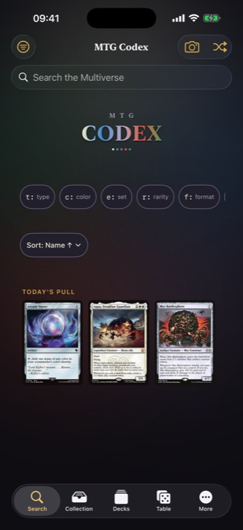
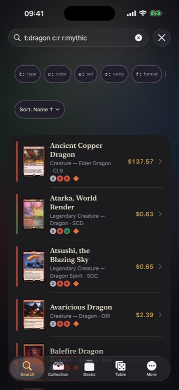
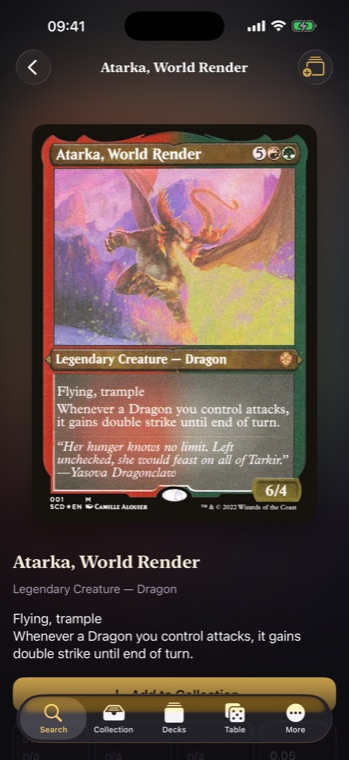
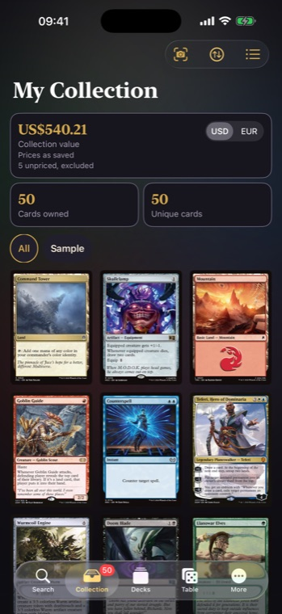
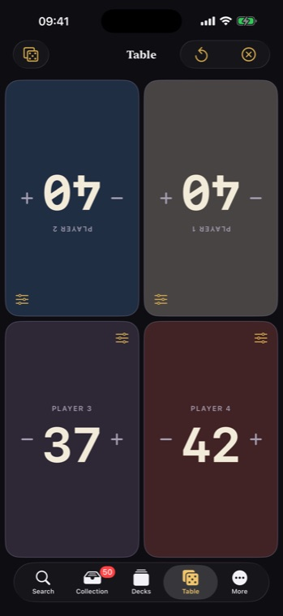
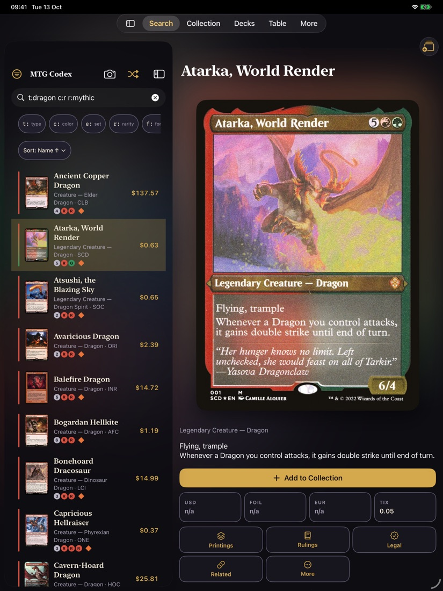
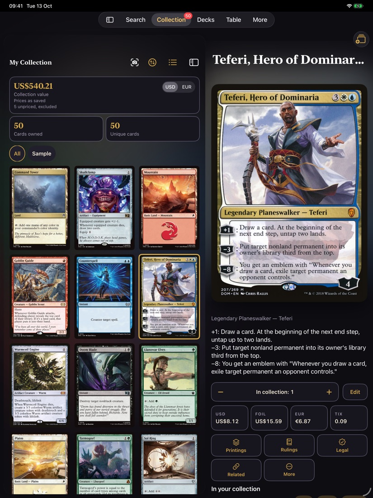
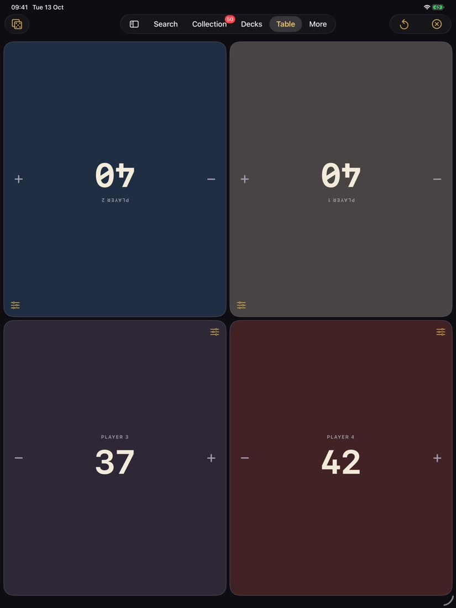

MTG Codex
Your Magic: The Gathering companion for iPhone and iPad.
What it does
- Search every card with Scryfall syntax, online or against a downloaded catalogue.
- Collect cards with finish, condition and quantity, see their value, and import or export CSV.
- Build decks and check format legality.
- Scan a card with the camera to look it up. Pictures stay on your device.
- Play with the Table: life totals for up to four players, commander damage, counters and dice.
- Dark "Grimoire" and light "Vellum" looks, haptics, optional sounds, and full accessibility support.
Screenshots





On iPad



No account, no ads, no tracking. See the privacy policy. Need help? Visit support.